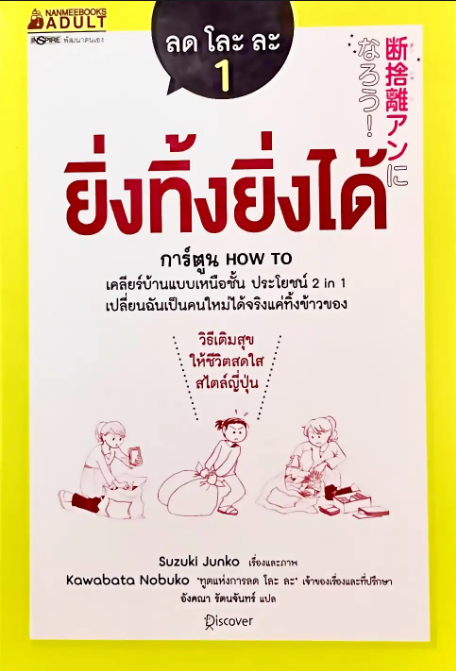

บางครั้งการทิ้งสิ่งของ
ก็อาจทำให้เรา
“ได้”
มากกว่าที่คิด !!

“หากคุณกำลังมองหาวิธีจัดบ้านให้เป็นระเบียบ พร้อมกับอยากปรับเปลี่ยนวิถีชีวิตให้เรียบง่ายและสบายใจขึ้น หนังสือเล่มนี้อาจเป็นจุดเริ่มต้นเล็ก ๆ ที่ช่วยให้คุณค้นพบว่า บางครั้งการ “ทิ้ง” ก็ทำให้เราได้อะไรกลับมามากกว่าที่คิด”

ทำไมถึงต้องอ่าน “ยิ่งทิ้งยิ่งได้” ?
“เคยไหม? ห้องเต็มไปด้วยของที่ไม่ได้ใช้ โต๊ะเรียนมีของวางจนไม่มีที่ หรือมีไฟล์และสิ่งต่าง ๆ ที่เก็บไว้เพราะคิดว่า “สักวันคงได้ใช้” จนสุดท้ายกลับทำให้รู้สึกยุ่งเหยิงและเสียเวลา หนังสือ ลด โละ ละ 1 : ยิ่งทิ้งยิ่งได้ โดย Suzuki Junko นำเสนอแนวคิดการ “ลด โละ ละ” ผ่านรูปแบบการ์ตูน How to ทำให้เรื่องการจัดการสิ่งของและการปล่อยวางเข้าใจง่าย และนำไปปรับใช้ได้ในชีวิตประจำวัน”
หนังสือชวนให้ผู้อ่านกลับมาสำรวจว่า สิ่งไหนจำเป็น สิ่งไหนไม่จำเป็น และสิ่งไหนที่เรายึดติดเพียงเพราะเสียดาย การลดสิ่งของที่ไม่จำเป็นไม่ได้หมายถึงเพียงการทำให้ห้องโล่งขึ้น แต่ยังเป็นการฝึกสำรวจตัวเอง และทำความเข้าใจกับความต้องการของเราอีกด้วย
เมื่ออ่านแล้วได้ประโยชน์อะไรบ้าง
ช่วยให้รู้จักเลือกสิ่งที่จำเป็น
ฝึกคิดก่อนซื้อ ก่อนเก็บ และก่อนตัดสินใจว่าจะเก็บสิ่งใดไว้
ช่วยสร้างพื้นที่ที่เป็นระเบียบมากขึ้น
เมื่อสิ่งของที่ไม่จำเป็นลดลง พื้นที่รอบตัวก็มีความโล่ง และใช้งานง่ายขึ้น
ช่วยลดเวลาและความยุ่งยากในชีวิตประจำวัน
เพราะไม่ต้องเสียเวลาค้นหาของ ที่ถูกวางปะปนกัน
ฝึกการไม่ยึดติดกับวัตถุ
ทำให้มองเห็นคุณค่าของสิ่งต่าง ๆ จากความจำเป็นและประโยชน์ มากกว่าความเสียดาย

ช่วยให้เข้าใจตัวเองมากขึ้น
เพราะการตัดสินใจว่าจะเก็บหรือทิ้งสิ่งใด ทำให้เราได้ทบทวนความต้องการ และรูปแบบการใช้ชีวิตของตัวเอง

ส่งเสริมประสิทธิภาพในการเรียนและการทำงาน
พื้นที่ที่เป็นระเบียบ และมีสิ่งรบกวนน้อยลง สามารถช่วยให้จัดการสิ่งต่าง ๆ ได้ง่ายขึ้น